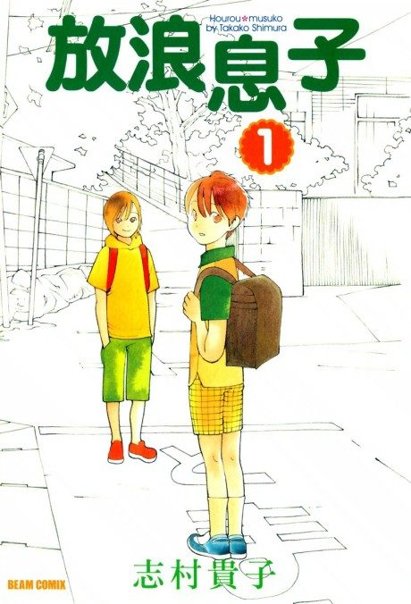

Wandering Son
放浪息子
Shuichi, a fifth grader who wants to be a girl, and Yoshino, who wants to be a boy, become friends.
After the anime, read the manga from Chapter 83.
7.4AniList score
—Animeter, no votes yet
11episodes
Rate it or report where you stopped
Anime finished. Where does the manga pick up?
Start at Chapter83
The anime ends around chapter 82 (volume 9), so start at chapter 83, the high school portion. The anime skips the first 33 elementary school chapters, so reading from the start is also worthwhile. The manga is finished at 123 chapters.
182123 end
Season 1Start reading here